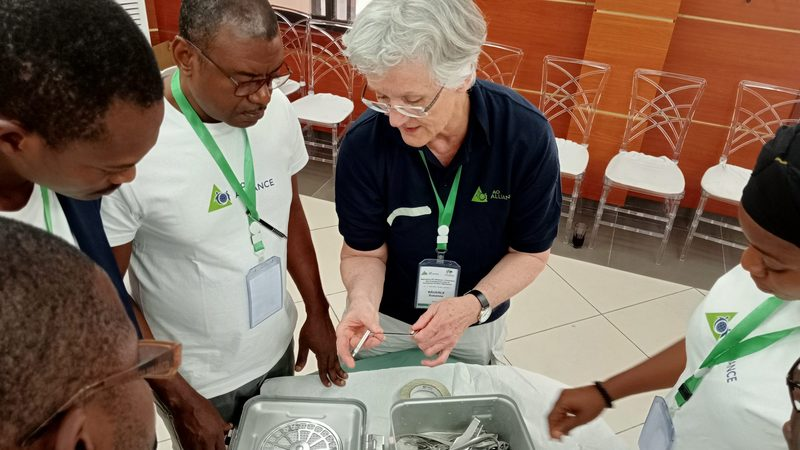
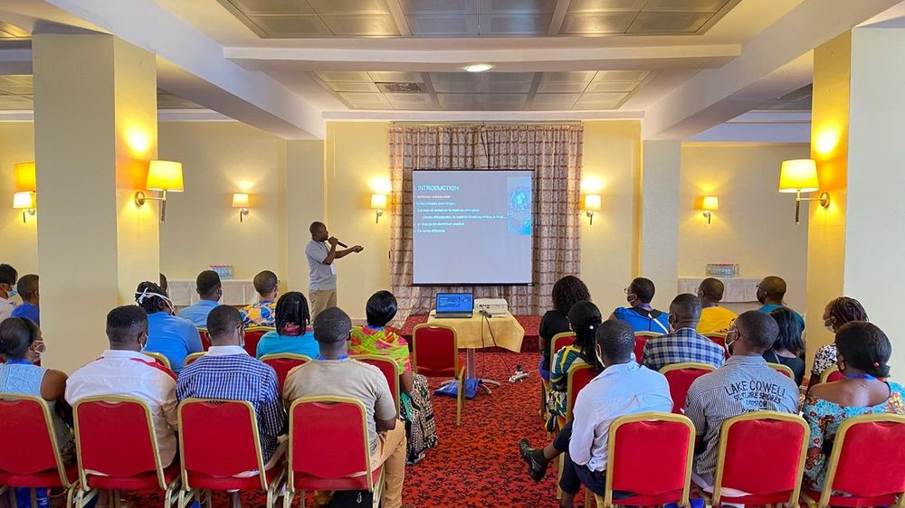
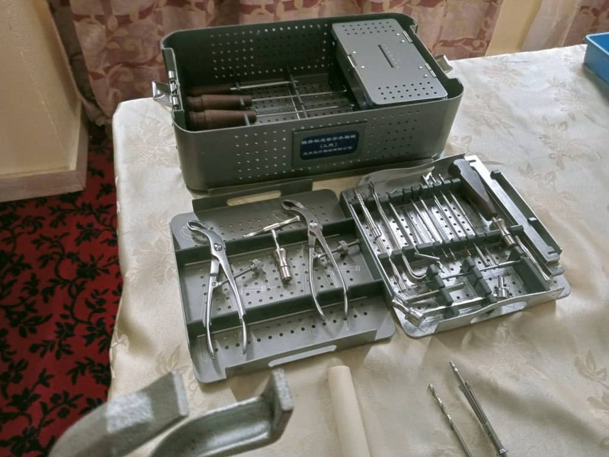

Cours et séminaires
Cours Non Opératoire, Cours Opératoire, Séminaires de Traumatologie pour Chirurgiens et pour PBO, Séminaires d’Information, Éducation et Communication.
Aucune session ne correspond à ces critères.
Cours, séminaires de traumatologie et séminaires PBO

Cours
Cours Non Opératoire et Cours Opératoire : enseignements oraux, ateliers de discussion, exercices pratiques et démonstrations.

Séminaires de traumatologie
Remettre les participants à niveau en ce qui concerne les indications et les techniques chirurgicales de traitement de certaines lésions traumatiques spécifiques.

Séminaires pour personnels de bloc opératoire (PBO)
Enseigner aux participants les comportements et les compétences techniques nécessaires à une bonne pratique professionnelle dans les salles d’opération de traumatologie.
Contactez-nous
Association Camerounaise pour l’Ostéosynthèse, BP 3398 Messa, Yaoundé-Cameroun — contact@ao-cameroun.org.